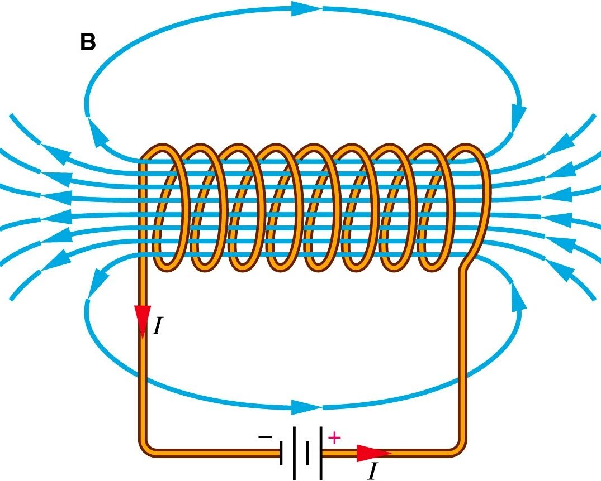

Coupled parametric oscillators
Equations of motion
A previous post examined the analytic solutions to the equation of motion describing a parametric oscillator — an oscillator whose physical properties are time-dependent. This problem was motivated by describing the transverse oscillations of a charged particle in an accelerator. In this post, the treatment will be extended to a coupled parametric oscillator. Basically, we are trying to solve the following equation of motion:
\[x'' + k_{11}(s)x + k_{13}(s)y + k_{14}(s)y' = 0,\] \[y'' + k_{33}(s)y + k_{31}(s)x + k_{32}(s)x' = 0,\]
where the prime denotes differentiation with respect to \(s\). We will also assume that \(k_{ij}(s + L) = k_{ij}(s)\) for some \(L\).
The first possible source of coupling is the longitudinal magnetic field produced within a solenoid magnet.

If we assume that the solenoid is very long, the field withing the coils points in the longitudinal direction and is approximately constant (\(\mathbf{B}_{sol} = B_0\hat{s}\)). Plugging this into the Lorentz force equation, we find:
\[\dot{\mathbf{v}} = \frac{q}{m} \mathbf{v} \times \mathbf{B} = \frac{qB_0}{m}\left({v_y\hat{x} - v_x\hat{y}}\right).\]
The motion in \(x\) depends on the velocity in \(y\), and vice versa. Coupling can also be produced by transverse magnetic fields. Recall the multipole expansion of a transverse magnetic field \(\mathbf{B} = (B_x, B_y)\):

There will be nonlinear coupling (terms proportional to \(x^j y^k\), where \(j,k > 1\)) when \(n > 2\), but we are interested only in linear coupling. This occurs when the skew quadrupole term \(a_2\) is nonzero, which is true when a quadrupole is tilted in the transverse plane. The field couples the motion in one plane to the displacement in the other.
Solution
Let’s review the approach we took in analyzing the 1D parametric oscillator. We wrote the solution in pseudo-harmonic form with an amplitude \(\sqrt{2 J \beta(s)}\) and phase \(\mu(s)\). We then focused on the motion of a particle in \(x\)-\(x'\) phase space after each focusing period. We observed that the particle jumps around an ellipse: the area of the ellipse is constant and proportional to \(2 J\); the dimensions of the ellipse are determined by \(\beta\) and \(\alpha = -\beta' / 2\); the size of the jumps around the ellipse are determined by \(\mu\). We then wrote the symplectic \(2 \times 2\) transfer matrix \(\mathbf{M}\), which connects the initial and final phase space coordinates through one period, as
\[\mathbf{M} = \mathbf{V}\mathbf{P}\mathbf{V}^{-1}.\]
\(\mathbf{V}^{-1}\), which is a function of \(\alpha\) and \(\beta\), is a symplectic transformation that deforms the ellipse into a circle while preserving its area, and \(\mathbf{P}\) is a rotation in phase space by the phase advance \(\mu\).
This is a very elegant way to describe the motion with a minimal set of parameters. The question is: can we do something similar for coupled motion, in which the phase space is 4D, not 2D? To start, let’s track a particle in a lattice with a nonzero skew quadrupole coefficient and plot its phase space coordinates after each period.
The particle traces donut-like shapes in \(x\)-\(x'\) and \(y\)-\(y'\) instead of ellipses. Here are the shapes after 1000 periods.
There is clearly more than one frequency present in the oscillations.
This is typical of a coupled oscillator. The motion in such systems is typically understood as the superposition of normal modes, each of which corresponds to a single frequency. For example, consider two masses connected with a spring. There are two possible ways for the masses to oscillate at the same frequency. The first is a breathing mode in which they move in opposite directions, and the second is a sloshing mode in which they move in the same direction. The motion is the sum of these two modes. We will try to do something similar for a coupled parameteric oscillator.
Transfer matrix eigenvectors
If the phase space coordinate vector \(\mathbf{x} = (x, x', y, y')^T\) evolves according to
\[\mathbf{x} \rightarrow \mathbf{Mx},\]
where \(\rightarrow\) represents tracking through one period, it can be shown that \(\mathbf{M}\) is symplectic due to the Hamiltonian mechanics of the system. Consider the eigenvectors of \(\mathbf{M}\):
\[\mathbf{Mv} = e^{-i\mu}\mathbf{v}.\]
The symplecticity condition causes the eigenvalues and eigenvectors come in two complex conjugate pairs; this gives \(\mathbf{v}_1\), \(\mathbf{v}_2\), \(\mu_1\), \(\mu_2\) and their complex conjugates. The seemingly complex motion is simplified when written in terms of the eigenvectors. We can write any coordinate vector as a linear combination of the real and imaginary components of \(\mathbf{v}_1\) and \(\mathbf{v}_2\):
\[\mathbf{x} = Re \left(\sqrt{2 J_1}\mathbf{v}_1e^{-i\psi_1} + \sqrt{2 J_2}\mathbf{v}_2e^{-i\psi_2}\right).\]
We have introduced two invariant amplitudes (\(J_1\) and \(J_2\)) as well as two initial phases (\(\psi_1\) and \(\psi_2\)). Applying the transfer matrix tacks on a phase to each eigenvector. Thus, what we are observing are the 2D projections of the real components of these eigenvectors as they rotate in the complex plane.
\[\mathbf{Mx} = Re \left(\sqrt{2 J_1}\mathbf{v}_1e^{-i\left(\psi_1 + \mu_1\right)} + \sqrt{2 J_2}\mathbf{v}_2e^{-i(\psi_2 + \mu_2)}\right).\]
Let’s replay the animation, but this time draw a red arrow for \(\mathbf{v}_1\) and a blue arrow for \(\mathbf{v}_2\). We’ve chosen \(J_1 = 4 J_2\) and \(\psi_2 - \psi_1 = \pi/2\).
Much simpler. Each eigenvector simply rotates at its frequency \(\mu_l\). It also explains why the amplitude in the \(x\)-\(x'\) and \(y\)-\(y'\) planes trade back and forth: it is because the projections of the eigenvectors rotate at different frequencies, sometimes aligning and sometimes anti-aligning. Because of this, the previous invariants \(J_{x,y}\) are replaced by \(J_{1,2}\). It is helpful to think of a torus (shown below). The two amplitudes would determine the inner and outer radii of the torus, and the two phases determine the location of a particle on the surface.

Eigenvector parameterization
We are now going to introduce a set of parameters for these eigenvectors, and in turn the transfer matrix. We already have two phases, so that leaves 8 parameters. Our strategy is to observe that each eigenvector traces an ellipse in both horizontal (\(x\)-\(x'\)) and vertical (\(y\)-\(y'\)) phase space. Then, we will simply assign an \(\alpha\) function and \(\beta\) function to each of these ellipses. So, for the ellipse traced by \(\mathbf{v}_1\) in the \(x\)-\(x'\) plane, we have \(\beta_{1x}\) and \(\alpha_{1x}\), and then for the second eigenvector we have \(\beta_{2x}\) and \(\alpha_{2x}\). The same thing goes for the vertical dimension with \(x\) replaced by \(y\).

The actual eigenvectors written in terms of the parameters are
\[\vec{v}_1 = \begin{bmatrix}\sqrt{\beta_{1x}} \\\\-\frac{\alpha_{1x} + i(1-u)}{\sqrt{\beta_{1x}}} \\\\ \sqrt{\beta_{1y}}e^{i\nu_1} \\\\ -\frac{\alpha_{1y} + iu}{\sqrt{\beta_{1y}}} e^{i\nu_1} \end{bmatrix}, \quad \vec{v}_2 = \begin{bmatrix} \sqrt{\beta_{2x}}e^{i\nu_2} \\\\ -\frac{\alpha_{2x} + iu}{\sqrt{\beta_{2x}}}e^{i\nu_2} \\\\ \sqrt{\beta_{2y}} \\\\ -\frac{\alpha_{2y} + i(1-u)}{\sqrt{\beta_{2y}}} \end{bmatrix}\]
So in addition to the phases \(\mu_1\) and \(\mu_2\) we have \(\alpha_{1x}\), \(\alpha_{2x}\), \(\alpha_{1y}\), \(\alpha_{2y}\), \(\beta_{1x}\), \(\beta_{2x}\), \(\beta_{1y}\), and \(\beta_{2y}\). That’s pretty much it. There are a few other parameters we need to introduce to simplify the notation, but they are not independent. The first is \(u\), which, as noted in the figure, determines the areas of the ellipses in one plane relative to the other. The second and third are \(\nu_1\) and \(\nu_2\), which are phase differences between the \(x\) and \(y\) components of the eigenvectors (in the animation they are either \(0\) or \(\pi\)). I won’t discuss these here. The last thing to note is that the parameters reduce to their 1D definitions when there is no coupling in the lattice. So we would have \(\beta_{1x}, \beta_{2y} \rightarrow \beta_{x}, \beta_{y}\) and \(\beta_{2x}, \beta_{1y} \rightarrow 0\), and similar for \(\alpha\). The invariants and phase advances would also revert back to their original values: \(J_{1,2} \rightarrow J{x,y}\) and \(\mu_{1,2} \rightarrow \mu_{x,y}\).
Floquet transformation
These eigenvectors can also be used to construct a transformation which removes both the variance in the focusing strength and the coupling between the planes, turning the coupled parametric oscillator into an uncoupled harmonic oscillator. In other words, we seek a matrix \(\mathbf{V}\) such that
\[\mathbf{V^{-1} M V} = \mathbf{P} = \begin{bmatrix} \cos{\mu_1} & \sin{\mu_1} & 0 & 0 \\ -\sin{\mu_1} & \cos{\mu_1} & 0 & 0 \\ 0 & 0 & \cos{\mu_2} & \sin{\mu_2} \\ 0 & 0 & -\sin{\mu_2} & \cos{\mu_2} \end{bmatrix} \]
We can do this simply by rewriting the following equation (I haven’t yet figured out how to number equations in Jupyter):
\[\mathbf{x} = Re \left(\sqrt{2J_1}\mathbf{v}_1e^{-i\psi_1} + \sqrt{2J_2}\mathbf{v}_2e^{-i\psi_2}\right)\]
in matrix form as \(\mathbf{x} = \mathbf{V}\mathbf{x}_n\) with
\[\mathbf{x}_n = \begin{bmatrix} \sqrt{2J_1}\cos{\psi_1} \\ -\sqrt{2J_1}\sin{\psi_1} \\ \sqrt{2J_2}\cos{\psi_2} \\ -\sqrt{2J_2}\sin{\psi_2} \end{bmatrix} \]
\[\mathbf{V} = \left[{Re(\mathbf{v}_1), -Im(\mathbf{v}_1), Re(\mathbf{v}_2), -Im(\mathbf{v}_2)}\right]\]
Let’s observe the motion in these new coordinates \(\mathbf{x}_n\).
The motion is uncoupled after this transformation; i.e., particles move in a circle of area \(2J_1\) in the \(x_n\)-\(x_n'\) plane at frequency \(\mu_1\), and in a circle of area \(2J_2\) in the \(y_n\)-\(y_n'\) plane at frequency \(\mu_2\).
Conclusion
The method introduced here allows us to describe the evolution of a parametric oscillator using the minimum number of parameters. Our physical motivation was an accelerator lattice with linear, coupled forces. There is no agreed upon method to do this among accelerator physicists, but I like (and know) this method the best, and have used it in my research. I’ve left out details which can be found in the paper by Lebedev and Bogacz. The paper by Ripken is also very helpful.